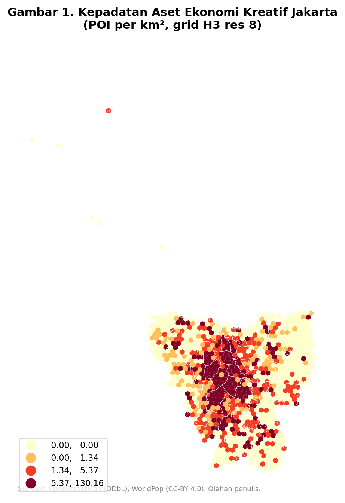
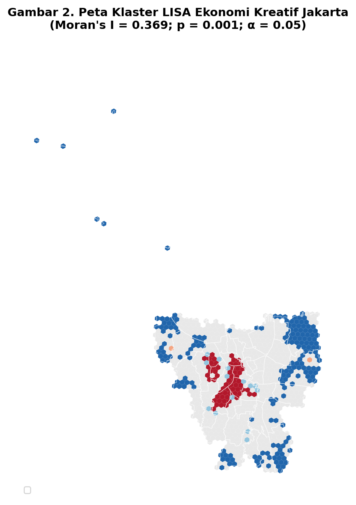
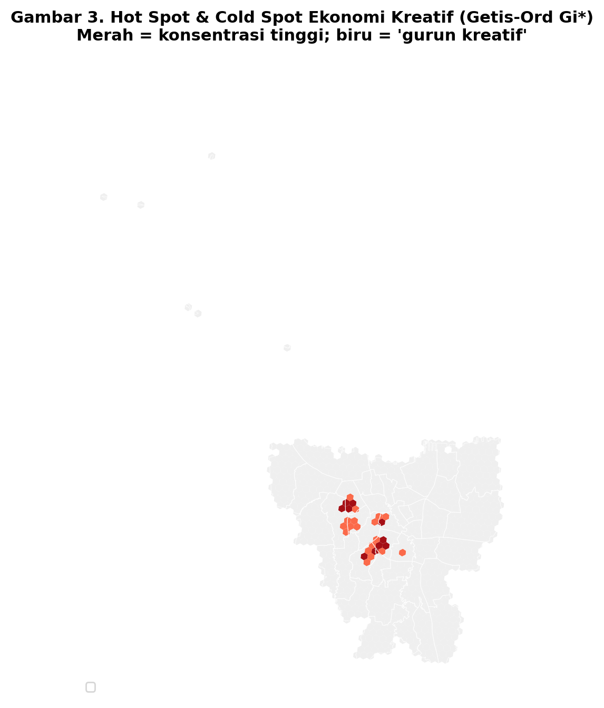
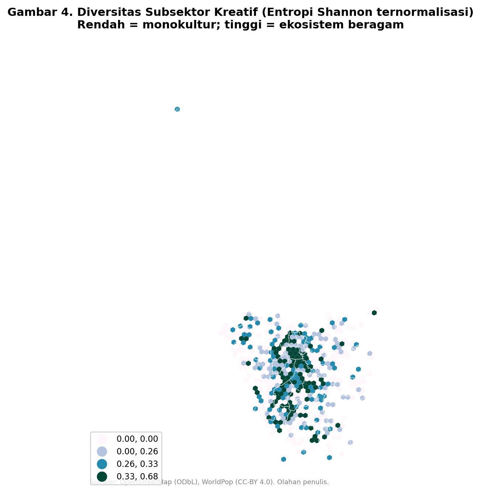
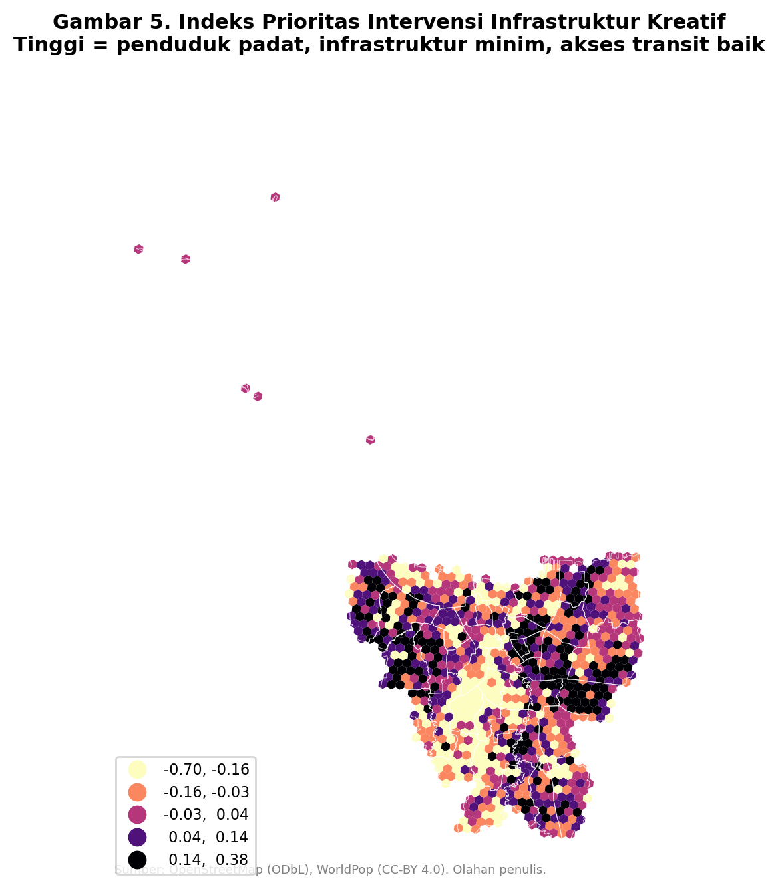
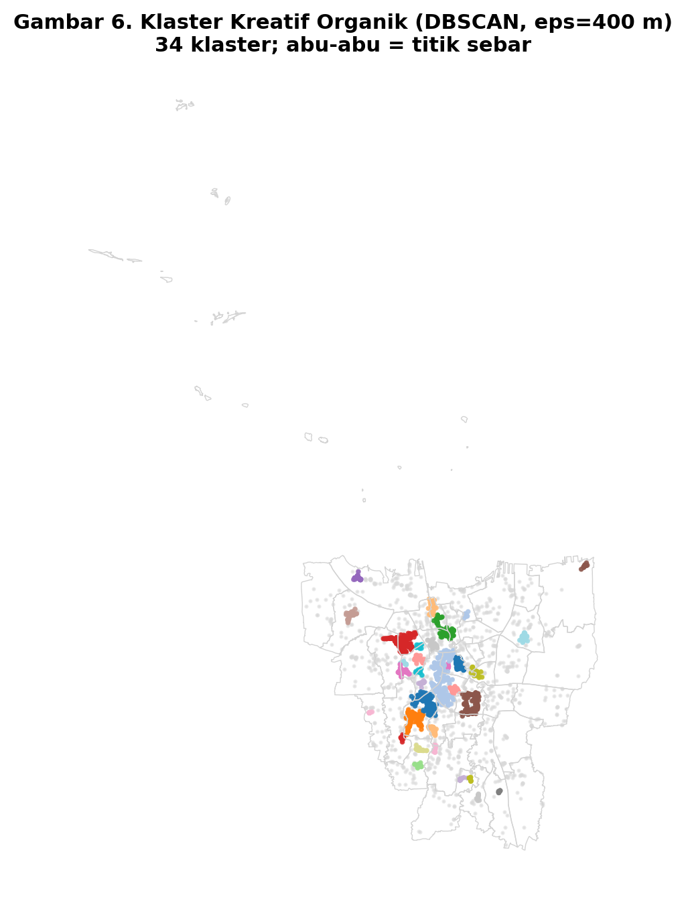

Diagnosis spasial · Jakarta · 2026
Kami memetakan 2.924 aset ekonomi kreatif di seluruh Jakarta — galeri, panggung, studio, ruang kerja bersama, toko buku, kafe — lalu mengujinya secara statistik. Hasilnya bukan sebaran yang merata, melainkan satu koridor yang padat dan wilayah luas yang nyaris kosong.
Data: OpenStreetMap (ODbL) & WorldPop (CC-BY 4.0) · diakses 24 Juli 2026
Metode: Moran's I · LISA · Getis-Ord Gi* · DBSCAN · entropi Shannon
Peta skematik: tiap heksagon = satu kecamatan, disusun mengikuti letak geografis relatif. Peta geografis sebenarnya ada di bagian Peta.
Temuan
Kuliner menyumbang 87,1% dari seluruh aset kreatif berbasis tempat. Sebelas subsektor lain — musik, film, desain, kriya, seni pertunjukan, dan seterusnya — bersama-sama hanya 378 titik. Kriya bahkan cuma dua.
Kriya (2) dan coworking (7) hampir pasti tercatat di bawah kondisi sebenarnya — keterbatasan pencatatan OpenStreetMap, bukan kesimpulan bahwa aktivitasnya tidak ada.
Moran's I = 0,369 (p = 0,001). Hipotesis bahwa aset kreatif tersebar acak ditolak. Dan ketika seluruh venue kuliner dikeluarkan, pola itu tidak menghilang — pada resolusi kasar bahkan sedikit menguat.
| Skenario | Moran's I | p |
|---|
Empat skenario, semuanya signifikan. Klaster kreatif Jakarta bukan bayangan sebaran restoran.
Buang kuliner dari perhitungan, dan wilayah yang tergolong "gurun kreatif" melonjak dari 186 menjadi 335 sel — dari 21,4% menjadi 38,5% wilayah Jakarta.
Penjelajah wilayah
Klik heksagon mana pun, atau ketik nama kecamatan. Setiap wilayah dibacakan ulang dari angkanya sendiri — bukan teks siap pakai.
Klaster organik
DBSCAN mencari kelompok yang terbentuk alami dari sebaran titik, tanpa dipaksa mengikuti garis administratif. Radius 400 meter — jarak berjalan kaki yang nyaman. Perhatikan kolom ragam: klaster terbesar belum tentu paling lengkap.
Peta
Heksagon di atas adalah skema. Ini hasil analisis pada geografi Jakarta yang sesungguhnya, pada grid 870 sel berukuran ±0,75 km².






Ke mana sebaiknya anggaran diarahkan
Bukan yang paling miskin aset semata, melainkan yang padat penduduk, miskin aset, sekaligus sudah terlayani transit — sehingga fasilitas baru langsung terjangkau tanpa perlu membangun akses lebih dulu.
Metode & keterbatasan
Aset kreatif diambil dari OpenStreetMap melalui Overpass API, diklasifikasikan ke 12 subsektor berbasis tempat, lalu dibersihkan menjadi 2.924 titik. Analisis statistik berjalan pada grid heksagonal H3 resolusi 8 (870 sel, ±0,75 km²) untuk menghindari bias bentuk dan ukuran unit administratif. Kepadatan penduduk diambil dari raster WorldPop 100 meter.
Empat hal yang perlu dinyatakan terbuka: kelengkapan OpenStreetMap tidak seragam antar subsektor (kriya dan coworking hampir pasti tercatat kurang); analisis ini mengukur keberadaan aset, bukan besaran ekonominya; subsektor murni digital tidak punya jejak lokasi sehingga tidak tertangkap; dan data populasi adalah estimasi model, bukan sensus. Temuan pola klaster tetap kokoh karena diuji pada empat skenario berbeda.
Seluruh pipeline memakai data berlisensi terbuka dan dapat dijalankan ulang oleh siapa pun. Notebook, tabel, dan berkas provenance tersedia di repositori.